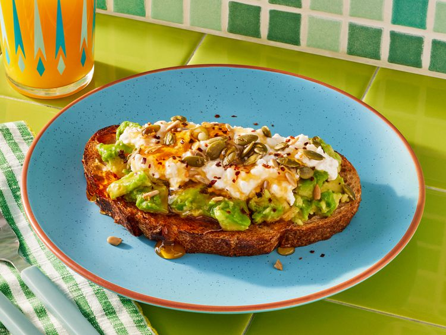

Avocado Toast
Home

Description
This truly is the best avocado toast you'll ever have. If you like an added protein boost, top with scrambled or boiled eggs.
Ingredients
- 1 slice sourdough bread, toasted
- 1/2 ripe avocado, smashed
- 1/3 cup cottage cheese
- 1 tablespoon sunflower nuts and/or roasted pumpkin seeds
- 1/2 teaspoon honey
- 1/8 teaspoon crushed red pepper flakes
- salt and freshly ground black pepper to tasted
Steps
- Assemble the avocado toast by smashing and smearing the avocado onto the toast
- Top with cottage cheese, then sprinkle with nuts/seeds, crushed red pepper flakes, salt and pepper to taste, and a drizzle of honey. Serve immediately